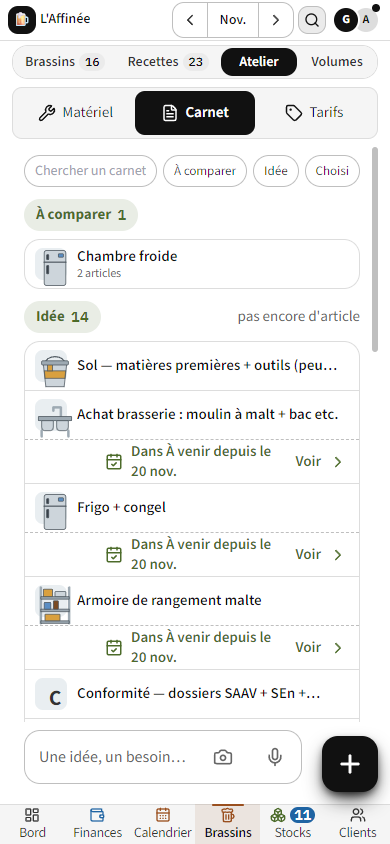
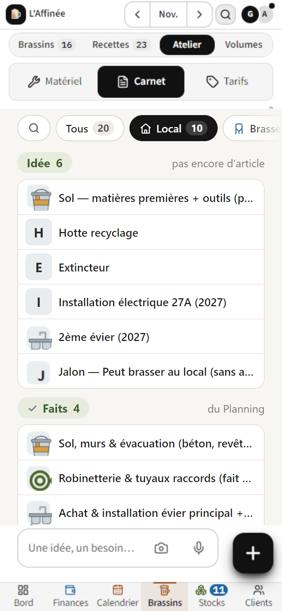
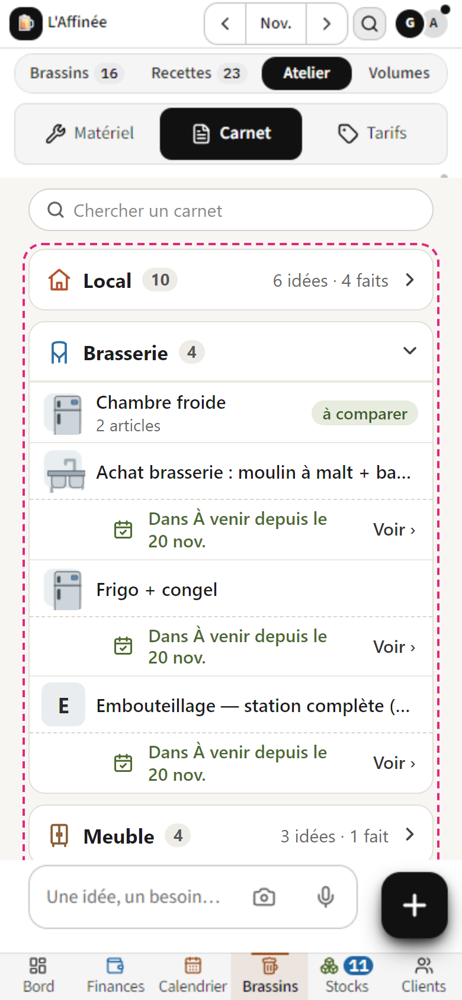
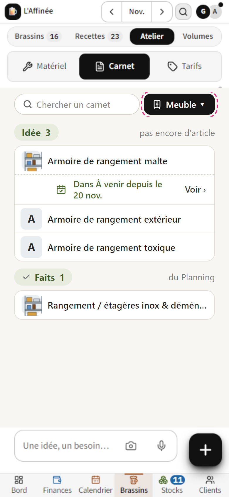
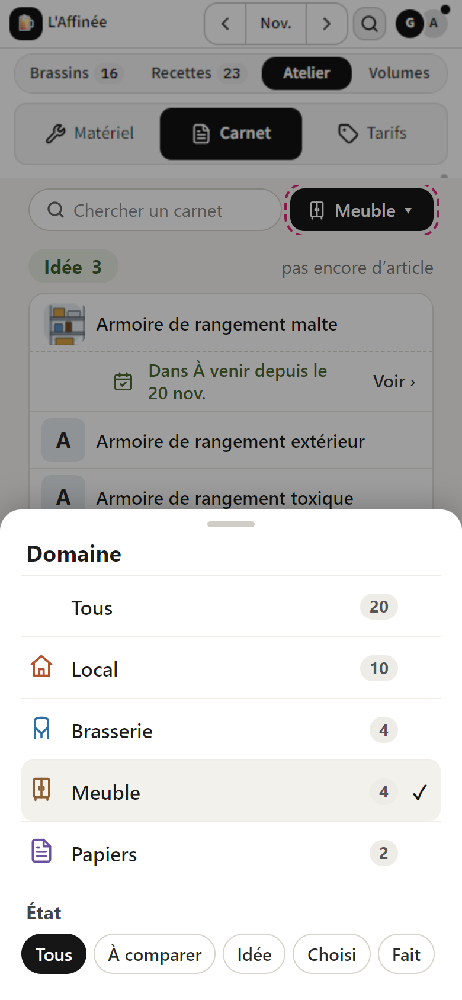
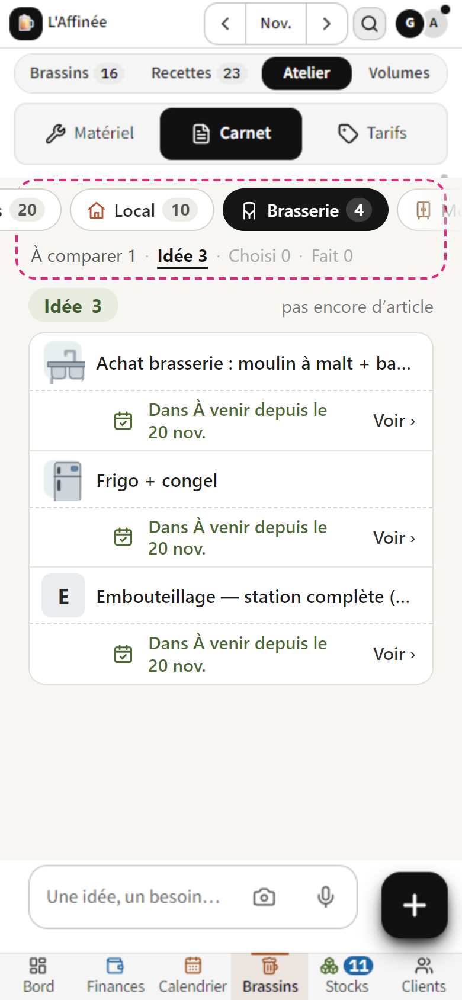
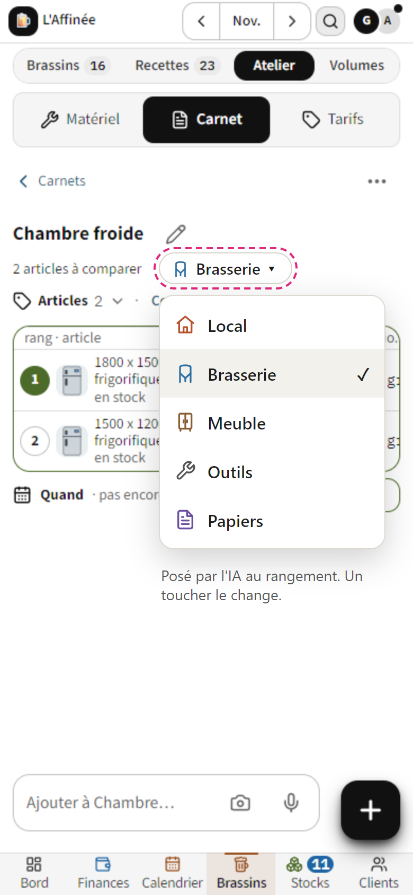

Carnet : filtres par domaine · 23.11
Ta liste des carnets, en ligne (tour 12). Les domaines sont tirés de tes 20 carnets : les 19 du Planning et Chambre froide. Mini maquettes statiques à 390 px ; pointillé rose : ce qui change.
« J'ai l'impression qu'il sont pas terribles ceux suggéré de base. Ça serait plus complexe mais plutôt filtre: brasserie, local, meuble, outils ... Ce genre de filtre » (23.11)
À choisir
- A · Une rangée de puces de domaines, avec leur nombre recommandé
- B · Les domaines en sections repliables, sans filtre
- C · Un seul bouton « Domaine ▾ » qui ouvre une feuille
- D · Puces de domaines, et l'état en second rang discret
- Les domaines eux-mêmes : Local, Brasserie, Meuble, Outils, Papiers à garder, renommer ou compléter
Pour toutes les variantes : l'IA pose le domaine quand elle range un carnet, et tu le changes d'un toucher dans le carnet (dernière image). La recherche C reste.
Réponds en une ligne, par exemple « A » ou « A, et Hotte en Brasserie ».
Les domaines, tirés de tes carnets
Cinq domaines, tes quatre mots plus Papiers. Un domaine sans carnet ne s'affiche pas : Outils apparaît au premier carnet d'outil.
Le bâtiment : sol, murs, eau et éviers, électricité, hotte, sécurité.
Le matériel qui fait la bière : moulin, froid, cuves, pompes, embouteillage.
Le rangement : étagères, armoires.
Dossiers, autorisations, assurances.
Ce qui se tient en main : perceuse, clés, matériel de pose. Aucun carnet aujourd'hui.
Chaque carnet et son domaine. La catégorie du Planning donne le domaine, sauf « Équipements », départagé par le titre. Surligné : un rangement discutable.
| Carnet (état) | Planning | Domaine |
|---|---|---|
| Chambre froideÀ comparer · ton carnet | — | Brasserie |
| Achat brasserie : moulin à malt + bac etc.Idée | Équipements | Brasserie |
| Frigo + congelIdée | Équipements | Brasserie |
| Embouteillage — station complète (2027)Idée | Équipements | Brasserie |
| Sol, murs & évacuation (béton, revêtement, peinture food-safe)Fait | Structure | Local |
| Robinetterie & tuyaux raccords (fait par soi-même)Fait | Plomberie | Local |
| Achat & installation évier principal + douchetteFait | Plomberie | Local |
| Refaire évier — bloqué (attendre vis pieds)Fait | Structure | Local |
| Sol — matières premières + outils (peut faire en 2x)Idée · pas Outils : c'est le sol | Structure | Local |
| Hotte recyclageIdée · bâtiment, ou Brasserie ? | Équipements | Local |
| ExtincteurIdée | Sécurité | Local |
| Installation électrique 27A (2027)Idée | Électricité | Local |
| 2ème évier (2027)Idée | Plomberie | Local |
| Jalon — Peut brasser au local (sans autorisation vente)Idée | Jalon | Local |
| Rangement / étagères inox & déménagementFait · le Planning dit Structure | Structure | Meuble |
| Armoire de rangement malteIdée | Équipements | Meuble |
| Armoire de rangement extérieurIdée | Équipements | Meuble |
| Armoire de rangement toxiqueIdée | Équipements | Meuble |
| Conformité — dossiers SAAV + SEn + assurancesIdée | Administratif | Papiers |
| Jalon — Conformité complète — Peut vendre officiellementIdée | Jalon | Papiers |
Les variantes, sur ta liste
Vignettes : celles vues en ligne ; une lettre quand les captures ne montrent pas la vignette du carnet.

Recherche, puis trois puces d'état : À comparer, Idée, Choisi. La liste est déjà rangée par état en sections.

Ce qui change : les puces d'état laissent la place aux domaines, avec leur nombre. Un toucher sur Local : ses 10 carnets, rangés par état comme aujourd'hui.
Puces d'état : retirées ; l'état reste l'ordre de la liste (À comparer, Idée, Faits).
Pourquoi : tes mots tels quels, un toucher, et le nombre se lit avant de toucher.

Ce qui change : plus de filtre ; la liste est rangée par domaine. Un domaine replié dit « 6 idées · 4 faits » ; un toucher l'ouvre.
Puces d'état : retirées ; l'état devient une marque sur la ligne (à comparer, fait grisé en bas).


Ce qui change : la recherche prend la largeur ; un bouton ouvre une feuille avec les domaines et leur nombre. Le domaine posé reste écrit sur le bouton.
Puces d'état : rangées dans la même feuille, sous les domaines.

Ce qui change : les puces de domaines de A, plus un second rang en texte : l'état, compté dans le domaine. Ici Brasserie, puis Idée : 3 carnets.
Puces d'état : gardées, mais en texte discret ; un état à 0 est grisé.
Qui pose le domaine

L'IA pose le domaine quand elle range un carnet, comme le titre et la vignette. Les 19 du Planning le prennent de leur catégorie.
Un toucher sur la pastille ouvre les cinq domaines ; ton choix passe avant celui de l'IA.